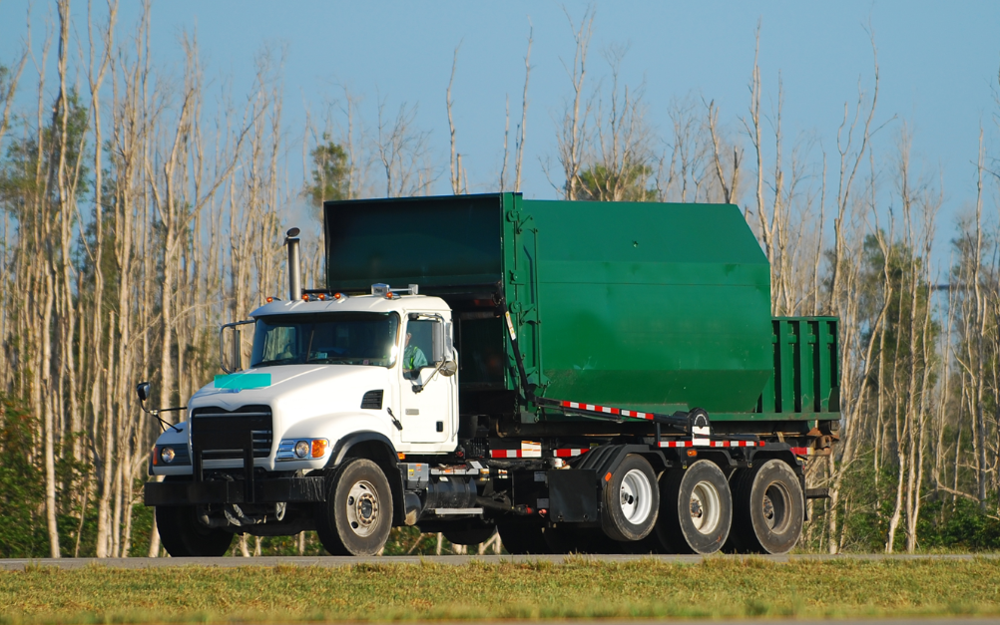

Returns & Collection
Scheduled pickups and on-demand collection tailored to your volume and site constraints.
Read More →Reliable Haulage, Equipment & Recovery
Green Cycle Environmental acts as your outsourced waste department — coordinating haulage, equipment, and recycling so you can focus on running your business, not managing dumpsters.
Explore ServicesWe simplify waste management for businesses across every industry. From routine collection to complex equipment logistics, Green Cycle Environmental delivers transparent, reliable service that keeps your operations clean and compliant.
Think of us as an extension of your team — a single point of contact for haulage, equipment rentals, repairs, recycling, and sustainability reporting.
Scheduled pickups and on-demand collection tailored to your volume and site constraints.
Read More →Efficient routing and material recovery that cut costs and keep resources in circulation.
Read More →Smart segregation, waste audits, and reporting to maximize diversion and compliance.
Read More →Equipment maintenance and value recovery programs that extend asset life.
Read More →
We act as your outsourced waste department, simplifying service, cutting costs, and keeping your business running smoothly.
One point of contact handles equipment breakdowns, haulage scheduling, and everything in between.
We manage vendors, invoices, and compliance so your team can focus on core business priorities.
Clear, consistent rates and consolidated billing — no hidden fees or surprise invoices.
A waste management expert who learns your operation and adapts service as your needs evolve.
We monitor service levels and resolve issues before they impact your facility.
No long-term lock-ins. Solutions that scale up or down with your business.
Let Green Cycle Environmental manage the details — from haulage and equipment to compliance and reporting.
Request a Free Consultation